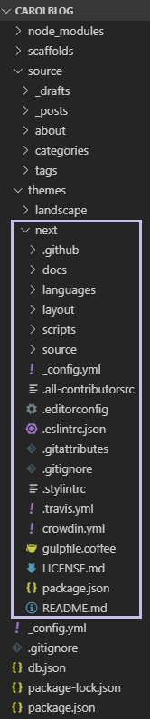

利用 Hexo + GitHub 建立部落格 (七) - 設置主題

我使用的主題是 Next 主題 的 7.3.0 版本
一、 把 Next 主題 複製到 blog 專案
1 | // 進入 blog 資料夾 |
會發現在 carolblog/themes 多了 next 資料夾 這就是我們的 Next 主題 資料夾

二、 將 blog 主題設定為 Next 主題
在 carolblog/_config.yml 中設定
1 | # 設定主題為 next |
三、 更新 Next 主題
1 | // 進入 Next 主題資料夾 |
利用 Hexo + GitHub 建立部落格 系列文章
- 利用 Hexo + GitHub 建立部落格 (一) - 安裝 Hexo 及 Hexo 目錄結構
- 利用 Hexo + GitHub 建立部落格 (二) - Hexo _config.yml 配置指南 1
- 利用 Hexo + GitHub 建立部落格 (三) - Hexo _config.yml 配置指南 2
- 利用 Hexo + GitHub 建立部落格 (四) - 我的 Hexo _config.yml 設定
- 利用 Hexo + GitHub 建立部落格 (五) - 建立文章
- 利用 Hexo + GitHub 建立部落格 (六) - 撰寫文章
- 利用 Hexo + GitHub 建立部落格 (七) - 設置主題